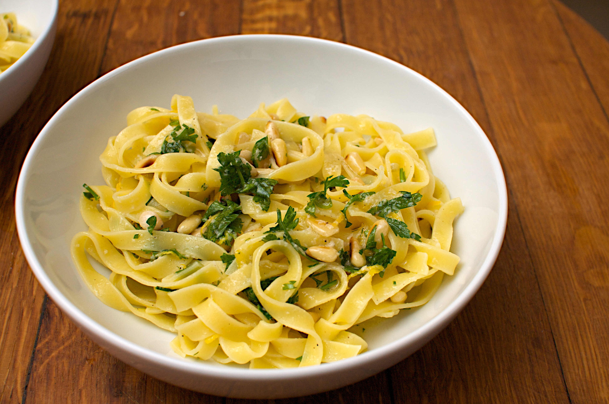

Tagliatelle with Garlic Butter and Parmesan
Home
Description
- Cook the Pasta: Boil a pot of salted water and cook tagliatelle according to the package instructions until al dente. Reserve some pasta water before draining.
- Make the sauce: In a large pan, melt 2-3 tablespoons of butter over medium heat. Add 2 minced garlic cloves and sauté until fragrant (about 1-2 minutes).
- Combine: Toss the cooked tagliatelle in the pan with the garlic butter. Add a splash of reserved pasta water to loosen the sauce if needed.
- Season: Season with salt, black pepper, and a pinch of red chili flakes (optional).
- Garnish: Top with freshly grated Parmesan cheese and chopped parsley for garnish.